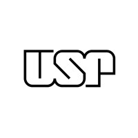

Guilherme Felipetto é mestrando no Programa de Pós-Graduação em Ciência da Computação do IME-USP, onde pesquisa segmentação de imagens baseada em grafos com restrições de forma, e Cientista de Dados na YGG Tecnologia, onde desenvolve sistemas de visão computacional e processamento de linguagem natural de ponta a ponta. Trabalha principalmente com Python e C/C++. Guilherme Felipetto is a Master's student in the Computer Science Graduate Program at IME-USP, where he researches graph-based image segmentation with shape constraints, and a Data Scientist at YGG Tecnologia, where he builds end-to-end computer vision and natural language processing systems. He works mainly with Python and C/C++.
Ver Portfólio View PortfolioMestrando em Ciência da Computação no Instituto de Matemática, Estatística e Ciência da Computação da USP, sob orientação do Prof. Paulo A. V. de Miranda. Pesquisa segmentação de imagens baseada em grafos com restrições de forma, na linha da Transformada Imagem-Floresta Orientada (OIFT), com foco em algoritmos eficientes com garantias formais de que o objeto segmentado respeita um modelo geométrico, começando por restrições de banda poligonais cujos lados se ajustam à imagem. Master's student in Computer Science at the Institute of Mathematics and Statistics of the University of São Paulo (IME-USP), advised by Prof. Paulo A. V. de Miranda. He researches graph-based image segmentation with shape constraints, in the line of the Oriented Image Foresting Transform (OIFT), focusing on efficient algorithms with formal guarantees that the segmented object respects a geometric model, starting with polygonal band constraints whose sides adjust to the image.
Cientista de Dados na YGG Tecnologia, onde desenvolve sistemas de visão computacional e PLN de ponta a ponta, do treinamento à implantação (Docker, MLflow, AWS), e lidera o desenvolvimento da plataforma web da empresa. Data Scientist at YGG Tecnologia, where he builds end-to-end computer vision and NLP systems, from training to deployment (Docker, MLflow, AWS), and leads development of the company's web platform.
Bacharel em Ciência de Dados pela Faculdade Donaduzzi (PR). Começou cedo, estudando ao lado do pai, engenheiro de computação, e teve o primeiro emprego em tecnologia aos 15 anos. Trabalha principalmente com Python e C/C++, com experiência em produção em C# e Node.js. Bachelor's degree in Data Science from Faculdade Donaduzzi (PR). He started early, studying alongside his father, a computer engineer, and had his first job in technology at 15. He works mainly with Python and C/C++, with production experience in C# and Node.js.
Primeira liga de ciência de dados competitiva da USP, grupo de extensão do IME. Competições de ciência de dados e aprendizado de máquina, projetos aplicados, aulas e grupos de estudo para os membros. USP's first competitive data science league, an IME extension group. Data science and machine learning competitions, applied projects, lectures and study groups for members.
Campanhas de tráfego pago para médicos e clínicas do oeste e sudoeste do Paraná, incluindo toda a parte audiovisual (filmagem, edição, som e câmera). Paid traffic campaigns for doctors and clinics in western and southwestern Paraná, including all the audiovisual work (filming, editing, sound and camera).
Primeiro emprego, aos 15 anos, numa empresa de ERP. Relatórios em XtraReports sobre SQL Server e Visual Basic; no último trimestre, desenvolvimento de aplicativo mobile em Xamarin (C#). First job, at 15, at an ERP company. Reports in XtraReports on SQL Server and Visual Basic; in the last quarter, mobile app development with Xamarin (C#).
Bancada de processamento de imagens em C++ escrita do zero, para estudo e experimentação de algoritmos: o processamento clássico do Gonzalez e segmentação por grafos (IFT/OIFT). Cada estágio da cadeia é inspecionável e cronometrado, e os resultados são validados contra scikit-image, OpenCV e numpy. Image processing workbench written from scratch in C++ for studying and experimenting with algorithms: classic Gonzalez processing and graph-based segmentation (IFT/OIFT). Every stage of the chain is inspectable and timed, and results are validated against scikit-image, OpenCV and numpy.
Desenvolvimento de modelos Text-To-Speech para clonagem de voz. Projeto premiado como 2º melhor minicurso ministrado no Biopark (Jan 2025). Development of Text-To-Speech models for voice cloning. Awarded 2nd best short course taught at Biopark (Jan 2025).
Sistema de visão computacional para detecção automática de desvios em carimbos de cartonagens, garantindo integridade do produto. Computer vision system for automatic detection of deviations in carton stamps, ensuring product integrity.
Aplicativo desenvolvido para gerenciamento de aviários com foco no combate à amônia. Application developed for poultry farm management with a focus on combating ammonia.
Demonstração prática de visão computacional aplicada a uma caixa de areia interativa para ensino de topografia. Practical demonstration of computer vision applied to an interactive sandbox for teaching topography.
Projeto de inteligência de mercado com dados da ABIMAQ e da Volvo Penta. Market intelligence project using data from ABIMAQ and Volvo Penta.
Felipetto, G.; Tampelini, L. G.; Honorio, C. Descrição de interfaces gráficas para pessoas cegas com visão computacional. Felipetto, G.; Tampelini, L. G.; Honorio, C. Description of graphical interfaces for blind people using computer vision.
Aborda o uso de visão computacional para garantir a integridade e segurança de produtos farmacêuticos. Discusses the use of computer vision to ensure the integrity and safety of pharmaceutical products.
Minicurso sobre modelos Text-to-Speech para clonagem de voz. Short course on Text-to-Speech models for voice cloning.

—Universidade de São Paulo (IME-USP)
Área: Visão e Processamento de Imagens. Orientador: Prof. Dr. Paulo André Vechiatto de Miranda.
Tema: segmentação de imagens baseada em grafos com restrições de forma, a partir da Transformada Imagem-Floresta Orientada (OIFT).
Area: Image Processing and Computer Vision. Advisor: Prof. Dr. Paulo André Vechiatto de Miranda.
Topic: graph-based image segmentation with shape constraints, building on the Oriented Image Foresting Transform (OIFT).
Disciplinas: Visão e Processamento de Imagem Digital; Aprendizado de Máquina; Probabilidade e Estatística. Courses: Digital Image Processing and Computer Vision; Machine Learning; Probability and Statistics.
Nota: 9.2
Atividades e grupos: Apresentações de artigos no Latinoware, no Congresso do Biopark, hackathons e projetos de iniciação científica. Participação na Liga Acadêmica.
Bacharelado em Ciência de Dados com foco em análise, modelagem e processamento de informações. Durante o curso, o estudante adquiriu experiência em programação para ciência de dados, análise exploratória de dados, aprendizado supervisionado e não supervisionado, engenharia de dados, processamento digital de imagens, MLOps, visualização da informação, matemática, estatística e probabilidade. Projetos integradores foram desenvolvidos aplicando técnicas de Data Warehouse, Power BI e extração de dados, incluindo imagens digitais, com o objetivo de apoiar a tomada de decisões e a automação de processos.
GPA: 9.2
Activities and groups: Paper presentations at Latinoware, Biopark Congress, hackathons, and undergraduate research projects. Participation in the Academic League.
Bachelor's Degree in Data Science focused on information analysis, modeling, and processing. During the program, the student acquired experience in programming for data science, exploratory data analysis, supervised and unsupervised learning, data engineering, digital image processing, MLOps, information visualization, mathematics, statistics and probability. Integrative projects were developed applying Data Warehouse techniques, Power BI, and data extraction, including digital images, aimed at supporting decision-making and process automation.
São Paulo, SP • (45) 98800-4664
Enviar E-mail Send Email